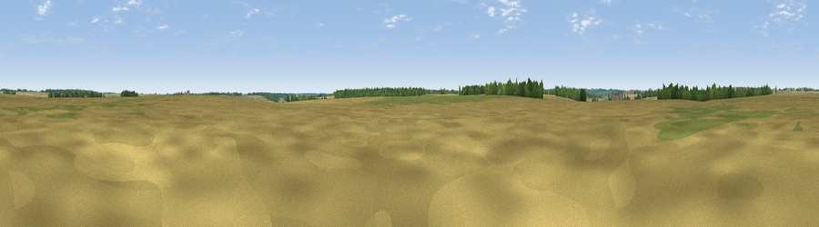

Viewpoint near Old Somerby
#45744 in England · top 96% of its area beats it · near Old SomerbyWhere it is
The exact computed spot (SK 95373 32602). Click the marker for map links.
The view, rendered

A 360° render of this exact spot computed from the terrain model, tree cover and land cover — summer colours, afternoon light, calibrated against photographs of famous viewpoints. Real trees, hedges and buildings will differ in detail.
The panorama
Grey silhouette: terrain skyline in each direction (720 bearings, Earth curvature and refraction included). Dashed green: skyline with trees (+15 m) and buildings (+8 m) as obstacles. Blue strip: how far the ground is visible on each bearing.
Where the view opens
Wedge length = distance to the farthest visible ground on that bearing (vegetation-aware). Rings at 10, 25 and 50 km.
What fills the view
80% cropland · 12% grassland · 8% woodland
Angular shares of the visible panorama (visual magnitude), not map area. Landscape diversity 0.28 (0–1 Shannon).
Key numbers
More beautiful places nearby
The staircase of upgrades: each row has a higher view potential than everything closer. Driving times are estimates from straight-line distance, calibrated against real road routing — check an actual route before setting out.
| Place | Direction | Drive | Score |
|---|---|---|---|
| Hall's Hill | NNW · 3 km | ~8 min | 35.2 |
| Viewpoint near Grantham | NNW · 4 km | ~10 min | 46.4 |
| Viewpoint near Belton | N · 7 km | ~15 min | 51.0 |
| Viewpoint near Barrowby | NW · 8 km | ~16 min | 53.5 |
| Viewpoint near Great Gonerby | NW · 9 km | ~17 min | 59.8 |
| Viewpoint near Great Gonerby | NW · 9 km | ~17 min | 62.0 |
| Viewpoint near Belvoir | W · 13 km | ~24 min | 70.8 |
| Broombriggs Hill | WSW · 47 km | ~68 min | 74.4 |
52.88243, -0.58415 · source: osm peak · position refined by local search. Computed location — check access rights before visiting.